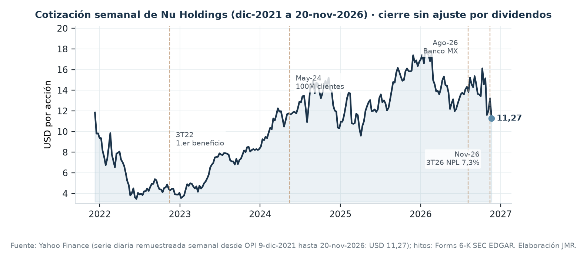
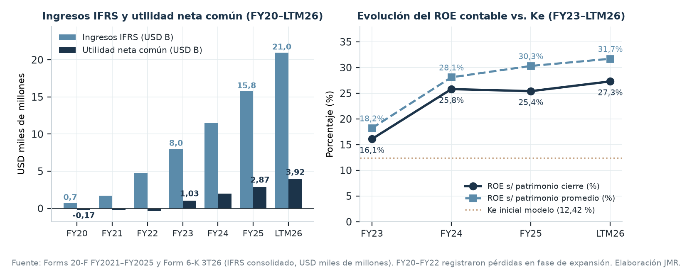
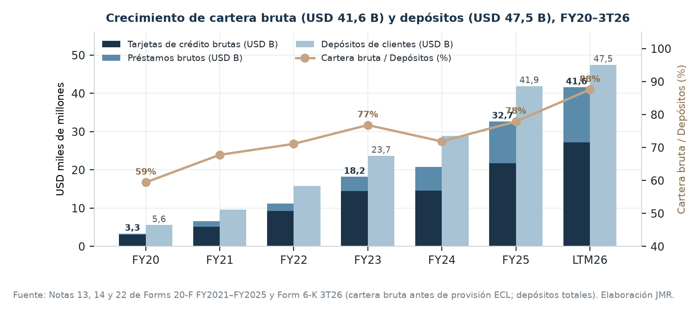
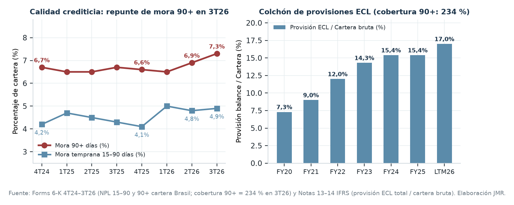
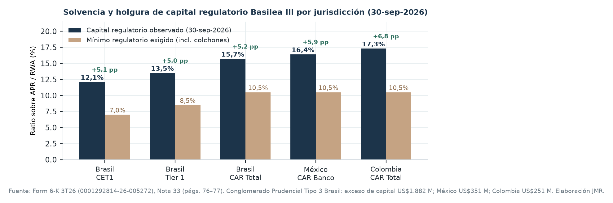
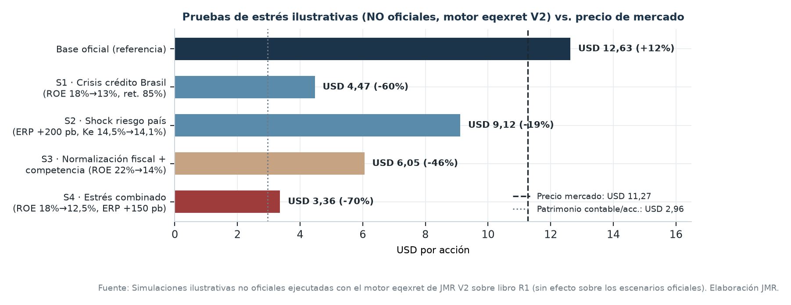
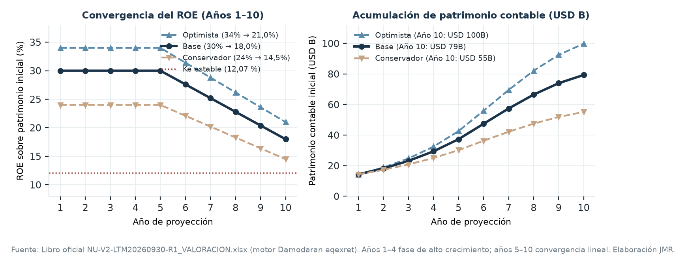
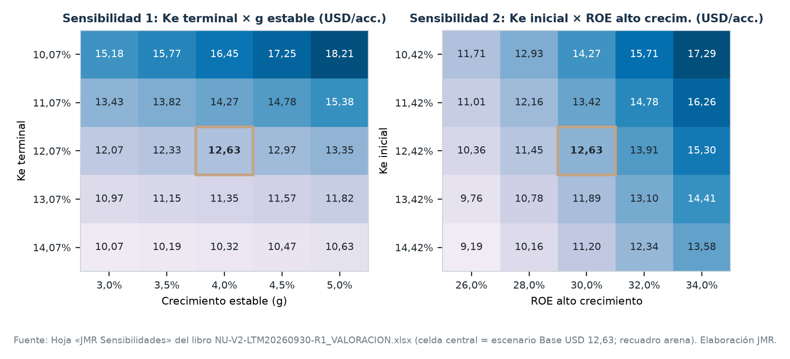

El mayor banco digital de Latinoamérica supera USD 1.090 M de utilidad trimestral con 32 % de ROE, pero la mora 90+ sube a 7,3 % y la acción cae 41 % desde máximos. ¿Cuánto vale su ventaja estructural?
INFORME FUNDAMENTAL · EN REVISIÓNNOVIEMBRE 2026
PERFIL DE LA EMPRESA
Nu Holdings
TESIS
Nu Holdings construyó una franquicia bancaria digital de 142,6 M de clientes con eficiencia de 19,3 %, US$47,5 B en depósitos y ROE LTM de 27,3 % (32 % en 3T26). El repunte de mora 90+ a 7,3 % y el costo del crédito llevaron el precio a US$11,27 (−40,6 % desde máximos). Nuestro modelo bancario de Exceso de Retorno (eqexret) estima un Base de US$12,63 (+12,1 %) y un MOS 35 % en US$8,21.
LA EMPRESA
Nu Holdings Ltd. (NYSE: NU; marca Nubank) opera servicios financieros 100 % digitales en Brasil (~120 M clientes, 65 % de adultos), México (16,6 M; banco múltiple desde ago-2026) y Colombia (6,1 M), además de iniciar operaciones en EE. UU. (Nu US) y Nu Global en sep–oct 2026.
En LTM al 30-sep-2026 registró ingresos IFRS de US$20.987 M, utilidad neta atribuible de US$3.915 M, patrimonio común de US$14.343 M y cartera bruta de US$41.588 M. Solvencia Basilea III verificada: CET1 Brasil 12,1 % (mín. 7,0 %; CAR 15,7 %), México 16,4 % y Colombia 17,3 %.
PRECIO (20-NOV-2026)US$11,27
RANGO 52 SEMANAS11,20 – 18,98
CET1 BRASIL (3T26)12,1 % (mín. 7,0 %)
CAPITALIZACIÓNUS$54,5 mil M
COTIZACIÓN SEMANAL DESDE OPI (DIC-2021 A NOV-2026 · US$)

Cierre semanal desde OPI (9-dic-2021 a 20-nov-2026). Rango 52 semanas: US$11,20–18,98; var. desde OPI: −4,9 %. Fuente: Yahoo Finance y Forms 6-K.
Aviso legal
Este informe es un estudio educativo y de análisis fundamental elaborado bajo el Modelo JMR V2.0 (contrato v1.5.6) para revisión personal de su propietario. No constituye asesoramiento financiero, oferta ni recomendación individualizada de compra o venta de valores. La inversión en entidades bancarias de mercados emergentes conlleva riesgos de crédito, liquidez, tipo de cambio y pérdida sustancial o total de capital.
Las cifras históricas proceden de documentos oficiales presentados ante la SEC por Nu Holdings Ltd. (CIK 0001691493: Forms 20-F FY2021–FY2025 y Forms 6-K hasta el 3T26, publicado el 12-nov-2026). Las proyecciones, escenarios y pruebas de estrés ilustrativas reflejan supuestos explícitos del analista y no garantías de resultados futuros.
Estado de este estudio
Revisión NU-V2-LTM20260930-R1, corte contable LTM al 30-sep-2026 y precio de cierre al 20-nov-2026 (US$11,27). Estado técnico: EN REVISIÓN (valoración preliminar visible en el visor de pendientes, sin auditoría independiente ni aprobación personal del propietario). Es el primer expediente del perfil banco publicado en la biblioteca JMR V2.
Cómo se elaboró
Conforme al contrato JMR V2.0 v1.5.6, no se aplica FCFF industrial a entidades bancarias. El cálculo económico se ejecuta en el libro oficial Damodaran de Exceso de Retorno sobre el Patrimonio (eqexret) (NU-V2-LTM20260930-R1_VALORACION.xlsx) con costo del patrimonio común en USD (Ke 12,42 % inicial → 12,07 % estable; tasa libre 5,15 % + beta 1,05/1,00 × ERP ponderado LatAm 6,92 %), tres escenarios (Conservador US$6,99 · Base US$12,63 · Optimista US$18,79), margen de seguridad 35 % exclusivamente sobre el Base (US$8,21), paridad libro↔motor JS exacta de 0,000 % y validación explícita de capital regulatorio Basilea III (CET1 Brasil 12,1 % vs. mínimo 7,0 %). La maquetación reproduce de forma idéntica NVIDIA R6 (38 págs.) y MercadoLibre R8 (31 págs.).
En el tercer trimestre de 2026 Nu Holdings superó los USD 1.091 M de utilidad neta trimestral (+31 % interanual neutral a divisas), con ingresos gerenciales de USD 6.259 M (+37 % FXN), 142,6 M de clientes y un ROE anualizado de 32 %.
A pesar de esos beneficios récord, la acción retrocedió 40,6 % desde su máximo de 52 semanas (USD 18,98) hasta USD 11,27 el 20-nov-2026 (casi su mínimo anual de USD 11,20), comprimida a 3,8× patrimonio contable y 13,9× utilidad neta LTM.
El mercado penaliza el aumento de la morosidad 90+ días a 7,3 % (máximo de trece trimestres), un gasto por pérdidas crediticias de USD 1.668 M en 3T26 (+70,7 % interanual), la caída de 90 pb en el CET1 de Brasil (a 12,1 %) y la incertidumbre de la expansión a Estados Unidos.
La pregunta central de este informe es si a USD 11,27 el mercado exagera el ciclo de morosidad de un banco digital con ventaja estructural de costos o si la normalización de ROE, impuestos y riesgo país impide aún exigir un margen de seguridad del 35 %.
Beneficios récord frente a un mercado escéptico
Pocas instituciones financieras en la historia moderna han escalado al ritmo de Nu Holdings. En menos de cinco años desde su salida a bolsa en Nueva York (diciembre de 2021), la entidad pasó de 53,9 millones de clientes y pérdidas netas de USD 165 millones a 142,6 millones de clientes y USD 3.915 millones de utilidad neta atribuible LTM al 30 de septiembre de 2026 (Forms 20-F FY2021–FY2025 y Form 6-K 3T26). Solo en los dos últimos trimestres (2T26 y 3T26), Nubank generó USD 2.153 millones de utilidad neta, superando por primera vez la barrera de los mil millones de dólares por trimestre de forma consecutiva.
Sin embargo, la cotización cuenta otra historia. Tras tocar USD 18,98 en 2026, el título descendió hasta USD 11,27 el 20 de noviembre de 2026 (−40,6 % desde máximos). La corrección se agudizó inmediatamente después de la publicación de resultados del 3T26 el 12 de noviembre de 2026. El catalizador no fue una desaceleración de clientes ni de ingresos, sino tres señales simultáneas de tensión crediticia y de capital que un analista bancario no puede ignorar: (i) la morosidad mayor a 90 días (NPL 90+) subió a 7,3 % (desde 6,9 % en 2T26 y 6,7 % en 3T25), el nivel más alto en trece trimestres; (ii) el cargo por pérdidas crediticias esperadas (ECL) saltó +70,7 % interanual hasta USD 1.668 M en el trimestre (USD 4.869 M en 9M26); y (iii) el ratio CET1 del conglomerado prudencial brasileño cedió 90 puntos básicos en nueve meses, de 13,0 % a 12,1 %, mientras los activos ponderados por riesgo de crédito crecían +28,3 % YTD.
A ello se sumaron hitos estratégicos de alto calibre a lo largo de 2026 que redefinen el perímetro del grupo: la autorización de un programa de recompra por USD 1.000 M en junio (con USD 500,4 M ejecutados en 9M26), el acuerdo para adquirir Banco Porto Real en julio con el fin de añadir licencia bancaria plena en Brasil, la entrada en operación como banco múltiple en México el 6 de agosto, el lanzamiento comercial de Nu US (en alianza con Lead Bank tras la aprobación condicional de la OCC para Nubank, N.A.) y Nu Global en septiembre-octubre, y la salida del CTO Eric Young anunciada el 23 de octubre, dejando a David Vélez a cargo interino de Plataformas Globales antes del primer Investor Day fijado para el 8 de diciembre de 2026.
Fecha (2026)
Hito verificado (fuente primaria SEC)
Implicación económica / regulatoria
Ene 2026
Aprobación condicional de la OCC para Nubank, N.A. (Forms 6-K)
Abre la ruta hacia carta bancaria nacional en EE. UU., con requisitos de capital y cumplimiento elevados.
8 abr
Form 20-F FY2025 (acc. 0001292814-26-002166)
Confirma ingresos IFRS de USD 15.775 M (+37,0 %) y utilidad neta común de USD 2.869 M (+45,5 %).
4 jun
Programa de recompra hasta USD 1.000 M (6-K acc. 0001292814-26-003326)
Primera devolución material de capital: 40,66 M de acciones Clase A recompradas por USD 500,4 M en 9M26.
20 jul
Acuerdo por Banco Porto Real (6-K acc. 0001292814-26-003814)
Añade licencia bancaria formal al conglomerado brasileño (Resolución Conjunta del BCB; sujeto a aprobación).
6 ago
Inicio de operaciones como banco múltiple en México (6-K 3T26)
Multiplica 16× el seguro de depósito (hasta ~USD 195 mil) y habilita cuentas de nómina; CAR MX 16,4 %.
10 sep
Lanzamiento de Nu US (Lead Bank) y Nu Global (6-K acc. 0001292814-26-004518)
Cuenta 3,5 % APY y tarjeta 1,5 % cashback en 50 estados; impacto comprometido ≤ 100 pb en eficiencia 2026–27.
23 oct
Renuncia del CTO Eric Young (6-K acc. 0001292814-26-005000)
Transición hasta 12-nov; David Vélez y el CISO John Walton asumen liderazgo interino de tecnología.
12 nov
Resultados 3T26 (6-K acc. 0001292814-26-005272 y 005273)
Utilidad récord USD 1.092 M y ROE 32 %, pero NPL 90+ sube a 7,3 % y ECL +71 %; acción cae a USD 11,27.
Fuente: SEC EDGAR (CIK 0001691493), Forms 20-F y 6-K publicados entre enero y noviembre de 2026.
Nuestra lectura. Valorar un banco exige abandonar el FCFF industrial —donde la deuda y los depósitos son materia prima, no capital de financiación— y concentrarse en tres variables: cuánto patrimonio genera, qué ROE sostenible produce sobre ese patrimonio después de pérdidas crediticias e impuestos, y qué costo del patrimonio (Ke) exige el riesgo soberano y de crédito de Latinoamérica. A USD 11,27, Nu cotiza cerca de nuestro valor Base (USD 12,63), pero todavía por encima del precio con margen de seguridad del 35 % (USD 8,21).
SECCIÓN 02
Modelo de negocio
Lo esencial
Nu opera un modelo de banca digital nativo en la nube, sin red física de sucursales, que monetiza 142,6 M de clientes (83,6 % activos mensualmente) con un ingreso mensual por cliente activo (ARPAC) de USD 17,7 frente a un costo de servir de apenas USD 1,1.
Su cuenta gerencial del 3T26 (USD 6.259 M) proviene en un 60,6 % de ingresos por crédito (USD 3.795 M: tarjetas y préstamos), 24,8 % de ingresos por float/tesorería sobre depósitos y saldos líquidos (USD 1.550 M) y 14,6 % de comisiones y tarifas (USD 913 M).
Aunque el CEO gestiona el grupo como un solo segmento reportable (Nota 34), la Nota geográfica de 9M26 confirma que Brasil genera el 90,3 % de los ingresos atribuibles (USD 11.612 M), México el 7,4 % (USD 952 M, +75,4 % YoY) y otros países/Colombia el 2,3 % (USD 296 M).
La cartera bruta de crédito suma USD 41.588 M (65,3 % tarjetas de crédito, 34,7 % préstamos), financiada con USD 47.487 M de depósitos minoristas a un costo equivalente al 87 % de la tasa interbancaria (CDI/TIIE/IBR).
Motor económico: depósitos de bajo costo + crédito de alto rendimiento
A diferencia de los bancos universales latinoamericanos construidos sobre miles de sucursales y sistemas core heredados, Nu Holdings diseñó su plataforma desde cero con arquitectura propia en la nube y distribución 100 % móvil. Esa estructura explica la asimetría operativa más potente del sector financiero regional: mientras el ARPAC mensual escaló desde USD 8,6 en 1T23 hasta USD 17,7 en 3T26 (+21 % FXN interanual), el costo mensual de servir por cliente activo permaneció anclado en USD 1,1. El resultado es un ratio de eficiencia de 19,3 % en 3T26 (y guía anual de 19–19,5 %), menos de la mitad del 40–48 % habitual en bancos tradicionales brasileños y mexicanos.
La secuencia de monetización sigue un patrón repetible de cuatro etapas en cada país: (1) captación masiva con costo de adquisición muy bajo mediante tarjeta sin cuota anual o cuenta remunerada; (2) captura del hábito diario y de la relación bancaria principal (Primary Banking Account) a través de pagos instantáneos (Pix en Brasil, SPEI en México); (3) acumulación de depósitos minoristas granulares (USD 47.487 M consolidados al 30-sep-2026) que generan ingresos de tesorería (float) invertidos en bonos soberanos y títulos líquidos; y (4) despliegue gradual de crédito al consumo —primero cuotas y rotativo de tarjeta, luego préstamos personales sin garantía y, más recientemente, crédito con garantía (nómina/consignado, FGTS e inversiones en garantía).
Evolución de la base de clientes por país (Brasil, México y Colombia) y economía unitaria mensual (ARPAC vs. costo de servir, 4T24–3T26). Fuente: Forms 20-F y 6-K.
Composición de ingresos, cartera y geografías (3T26 y 9M26)
La economía real del negocio se observa claramente al contrastar la cuenta gerencial (que reclasifica impuestos sobre ingresos y coberturas) con la contabilidad IFRS auditada. Ambas convergen exactamente en la misma utilidad neta consolidada (USD 1.091,6 M en 3T26). En la Nota 34 del Form 6-K 3T26 se aprecia que el grueso de la rentabilidad sigue anclado en Brasil, mientras México y Colombia se encuentran en fase de inversión acelerada y escalamiento de depósitos y crédito.
Geografía / Unidad (3T26 y 9M26)
Clientes (M)
Penetración adultos
Depósitos (USD B)
Ingresos 9M26 (USD M)*
Peso 9M26
Ratio capital
Brasil (Conglomerado Tipo 3)
119,9
65 %
38,6
11.612,5
90,3 %
CET1 12,1 % / CAR 15,7 %
México (Banco Múltiple desde ago-26)
16,6
17 %
5,3
952,3
7,4 %
CAR 16,4 % (mín. 10,5 %)
Colombia y otros (incl. Nu US / Global)
6,1
15 % (CO)
3,5
295,7
2,3 %
CAR CO 17,3 % (mín. 10,5 %)
Total consolidado (30-sep-2026)
142,6
—
47,5
12.860,5*
100,0 %
Exceso BR: USD 1.882 M
*Ingresos en alcance Nota 34 IFRS (excluye ganancias/pérdidas financieras no asignadas por país; total ingresos IFRS 9M26 = USD 16.301,5 M). Fuente: Form 6-K 3T26 (Notas 33 y 34 y comunicado 3T26).
Estructura de fondeo y liquidez
Al 30 de septiembre de 2026, los depósitos minoristas (USD 47.486,8 M, integrados por USD 37.564 M en RDB en Brasil, USD 9.054 M en depósitos de clientes, USD 823 M en CDB y USD 46 M interbancarios) cubren el 114,2 % de la cartera bruta de crédito (USD 41.588,4 M), lo que equivale a una relación cartera bruta / depósitos (LDR) de 87,6 % (y cartera neta / depósitos de 72,8 %). Además, Nu mantiene USD 13.772 M en efectivo y equivalentes, USD 10.220 M en encajes obligatorios en bancos centrales y USD 21.152 M en valores de renta fija (principalmente bonos soberanos latinoamericanos de Nivel 1 por USD 15.929 M). El costo consolidado de depósitos bajó al 87 % de la tasa interbancaria en 3T26 (frente a 89 % en 3T25), confirmando capacidad de fondeo estable incluso mientras expande cuentas remuneradas en México y Colombia.
Nuestra lectura. El negocio central de Nu es económicamente excepcional porque combina fondeo granular de bajo costo con un costo operativo por cliente prácticamente plano (USD 1,1/mes). Sin embargo, el 61 % del ingreso gerencial ya proviene del crédito al consumo y el 90 % de Brasil: su perfil económico real es el de un banco de consumo de alto rendimiento y alta pérdida esperada, no el de una firma de software exenta de ciclo crediticio.
SECCIÓN 03
Calidad del negocio
Lo esencial
Los ingresos IFRS crecieron 28,5× en seis años, de USD 737 M en FY2020 a USD 20.987 M en LTM 30-sep-2026, mientras la utilidad neta atribuible pasó de pérdidas (−USD 365 M en FY2022) a USD 3.915 M LTM (ROE 27,3 % sobre patrimonio de cierre; 31,7 % sobre patrimonio medio).
La calidad contable exige vigilar dos matices clave del 9M26: (i) la tasa efectiva de impuestos cayó a 14,6 % en 9M26 (15,2 % LTM vs. 25,8 % en FY2025 y 29,4 % en FY2024) por beneficios fiscales de I+D (Lei do Bem) y reconocimiento de activos por impuestos diferidos (USD 3.346 M en balance); y (ii) el cargo por pérdidas crediticias (ECL) subió 64,3 % en 9M26 a USD 4.869 M.
La cartera bruta alcanzó USD 41.588 M (+33 % FXN YoY), respaldada por una provisión acumulada de USD 7.087 M (17,0 % de la cartera bruta; cobertura de 234 % sobre mora 90+ días).
El flujo operativo IFRS de 9M26 fue negativo (−USD 1.050 M; LTM −USD 219 M) únicamente porque la originación neta de tarjetas y préstamos (+USD 21.553 M) superó el ingreso de depósitos (+USD 5.591 M), ilustrando por qué el FCFF industrial es inaplicable a bancos.
Evolución financiera histórica (FY2020–FY2025 y LTM 30-sep-2026)
Nu Holdings cotiza en la NYSE desde diciembre de 2021; sus estados financieros IFRS consolidados auditados completos ante la SEC (balance, resultados, flujos y notas de cartera) cubren siete períodos consecutivos desde FY2020 hasta LTM al 30 de septiembre de 2026 (con pérdidas operativas en FY2020–FY2022 durante la etapa de captación masiva y un punto de inflexión estructural a partir de FY2023). Conforme al contrato JMR V2.0 v1.5.6, no se fabrican ejercicios anteriores a la disponibilidad auditada en EDGAR (2017–2019 quedan documentados como N/D).

Ingresos IFRS, utilidad neta atribuible al común y trayectoria del ROE contable frente al costo del patrimonio (FY2020–LTM 30-sep-2026). Fuente: Forms 20-F y 6-K 3T26.Progresión trimestral de ingresos gerenciales, utilidad neta y ROE anualizado (4T24–3T26). Fuente: Comunicados de resultados Forms 6-K.
Estados financieros históricos bancarios (IFRS · USD millones)
Para entidades financieras (perfil banco), los cuadros históricos se presentan en importes absolutos (USD millones) y ratios bancarios en su unidad natural (%, × y USD/acción), separando estrictamente los ejercicios anuales (FY) del período LTM al 30-sep-2026. No se calculan métricas industriales ajenas al sector bancario (EBITDA, FCFF o capital de trabajo operativo).
Estado de resultados consolidado (IFRS · importes absolutos en USD M y ratios)
Concepto
Unidad
FY 2020
FY 2021
FY 2022
FY 2023
FY 2024
FY 2025
LTM sep-26
Ingresos totales (IFRS)
USD M
737,1
1.698,0
4.792,2
8.029,0
11.517,1
15.774,7
20.987,4
Gasto por pérdidas crediticias (ECL)
USD M
169,5
480,6
1.404,9
2.285,2
3.169,0
4.204,9
6.110,4
Utilidad bruta bancaria
USD M
326,9
732,9
1.663,0
3.490,9
5.252,9
6.625,0
8.591,3
Utilidad antes de impuestos (UAI)
USD M
−193,2
−170,2
−308,9
1.539,1
2.795,2
3.868,4
4.618,6
Impuestos sobre la renta
USD M
−21,7
−4,8
55,7
508,5
823,1
996,7
699,7
Utilidad neta atribuible al común
USD M
−171,5
−165,0
−364,6
1.030,5
1.972,1
2.868,9
3.915,5
Dividendos pagados al común
USD M
0,0
0,0
0,0
0,0
0,0
0,0
0,0
Recompras de acciones
USD M
0,0
4,6
0,0
0,0
0,0
0,0
500,4
Margen neto (NI / Ingresos)
%
−23,3 %
−9,7 %
−7,6 %
12,8 %
17,1 %
18,2 %
18,7 %
Tasa efectiva de impuestos
%
N/D
N/D
N/D
33,0 %
29,4 %
25,8 %
15,2 %
Fuente: Forms 20-F FY2021, FY2023 y FY2025; Form 6-K 3T26 (LTM = FY2025 + 9M26 − 9M25). Impuesto negativo en FY20–21 refleja crédito fiscal diferido. Tasa efectiva N/D en años con pérdida antes de impuestos.
Balance general bancario y cartera (IFRS · USD millones y ratios)
Concepto
Unidad
FY 2020
FY 2021
FY 2022
FY 2023
FY 2024
FY 2025
30-sep-26
Activos totales
USD M
10.154,3
19.858,7
29.934,9
43.498,4
49.931,2
74.893,9
87.428,6
Cartera bruta de crédito (tarjetas + préstamos)
USD M
3.319,8
6.554,5
11.242,7
18.202,1
20.735,8
32.666,7
41.588,4
Provisión acumulada ECL (balance)
USD M
243,8
588,2
1.350,9
2.608,4
3.184,1
5.022,0
7.086,8
Depósitos de clientes
USD M
5.584,9
9.667,3
15.808,5
23.691,1
28.855,1
41.925,1
47.486,8
Pasivos totales
USD M
9.716,1
15.416,1
25.044,1
37.092,1
42.284,1
63.572,3
73.083,6
Patrimonio atribuible al común
USD M
438,1
4.441,0
4.890,8
6.406,4
7.646,3
11.290,9
14.342,6
Participaciones minoritarias
USD M
0,0
1,5
0,0
0,0
0,8
30,6
2,3
Acciones emitidas cierre (Clase A + B)
M acc.
3.969,1
4.610,0
4.694,8
4.765,9
4.818,7
4.855,7
4.838,5
ROE (NI / patrimonio común cierre)
%
−39,1 %
−3,7 %
−7,5 %
16,1 %
25,8 %
25,4 %
27,3 %
ROA (NI / activos totales cierre)
%
−1,7 %
−0,8 %
−1,2 %
2,4 %
4,0 %
3,8 %
4,5 %
Patrimonio común / Activos
%
4,3 %
22,4 %
16,3 %
14,7 %
15,3 %
15,1 %
16,4 %
Cartera bruta / Depósitos (LDR bruto)
×
0,59×
0,68×
0,71×
0,77×
0,72×
0,78×
0,88×
Provisión ECL / Cartera bruta
%
7,3 %
9,0 %
12,0 %
14,3 %
15,4 %
15,4 %
17,0 %
Fuente: Libro oficial NU-V2-LTM20260930-R1_VALORACION.xlsx («JMR Estados» y «JMR Indicadores») conciliado contra SEC EDGAR (Forms 20-F y 6-K 3T26, Notas 13, 14, 22 y 31). Control D06 de cuadre patrimonial: OK en los 7 períodos.
Flujos de efectivo consolidados (IFRS · USD millones)
Concepto
Unidad
FY 2020
FY 2021
FY 2022
FY 2023
FY 2024
FY 2025
LTM sep-26
Flujo de efectivo operativo
USD M
974,5
−2.924,3
755,6
1.266,2
2.399,0
3.500,5
−218,5
Flujo de efectivo de inversión
USD M
−16,3
−154,2
−127,2
−177,0
−330,6
−342,3
−413,8
Flujo de efectivo de financiación
USD M
240,1
3.336,0
654,0
425,2
727,7
2.290,2
1.119,3
Cambio neto en efectivo (antes FX)
USD M
1.198,4
257,5
1.282,5
1.514,4
2.796,2
5.448,4
486,9
Fuente: Hoja «JMR Flujos detalle» del libro oficial y Estados de Flujos de Efectivo IFRS (Forms 20-F FY2021–2025 y 6-K 3T26).

Expansión de cartera bruta (tarjetas y préstamos) frente a depósitos y relación LDR bruto (FY2020–3T26). Fuente: SEC EDGAR.

Evolución de morosidad 15–90 y 90+ días (4T24–3T26) y colchón acumulado de provisiones ECL sobre cartera bruta. Fuente: Forms 6-K y Notas 13–14 IFRS.
Calidad de activos y suficiencia de capital regulatorio Basilea III
El debate central sobre la calidad del balance de Nu gira en torno a la lectura correcta de la morosidad. En el 3T26, la mora 90+ días de Brasil subió 40 pb trimestrales a 7,3 % (y la temprana 15–90 días a 4,9 %). La administración atribuye parte del incremento al cambio de mezcla hacia saldos que devengan intereses (Interest-Earning Portfolio, hoy 61 % del libro): medido solo sobre cartera que genera intereses, la mora 15–90 bajó de 8,2 % a 8,0 %, mientras la 90+ subió de 11,6 % a 12,1 %. El margen neto de interés ajustado por riesgo (Risk-Adjusted NIM) se mantuvo muy sólido en 12,1 % (12,7 % excluyendo partidas no recurrentes) y la cobertura de provisiones sobre mora 90+ alcanzó 234 %.
En solvencia regulatoria (Nota 33 del Form 6-K 3T26, págs. 76–77), el Conglomerado Prudencial Tipo 3 en Brasil cerró al 30-sep-2026 con un CET1 de 12,1 % (USD 4.382 M sobre APR de USD 36.200 M) frente a un mínimo normativo BACEN de 7,0 % (4,5 % básico + 2,5 % colchón de conservación), un Tier 1 de 13,5 % y un CAR total de 15,7 % frente al mínimo de 10,5 % (exceso de capital de USD 1.882 M). México opera con CAR de 16,4 % (mínimo 10,5 % para banco múltiple) y Colombia con 17,3 % (mínimo 10,5 %). No obstante, el descenso de 90 pb en el CET1 brasileño en nueve meses (de 13,0 % a 12,1 %) confirma que el crecimiento de 33 % anual del crédito consume capital regulatorio real y limita la capacidad de repartir dividendos elevados en el corto plazo.

Ratios de capital regulatorio Basilea III observados al 30-sep-2026 frente a los mínimos exigidos en Brasil, México y Colombia. Fuente: Form 6-K 3T26, Nota 33.
Nuestra lectura. La calidad económica de Nu es genuinamente sobresaliente (ROA de 4,5 %, NIM ajustado por riesgo de 12,1 %, cobertura de 234 % y CET1 con 510 pb de holgura), pero el beneficio LTM está favorecido por una tasa fiscal anormalmente baja (15,2 %). Si normalizamos el impuesto hacia 25–28 % y asumimos un costo de crédito más alto, el ROE sostenible de largo plazo será claramente inferior al 32 % reciente, justificando la convergencia hacia 18 % en nuestro escenario Base.
SECCIÓN 04
Equipo directivo y gestión del capital
Lo esencial
Nu sigue liderada por su fundador, presidente y CEO David Vélez y su cofundadora Cristina Junqueira, con fuerte alineación patrimonial: Vélez posee 903,1 M de acciones Clase B (18,7 % del capital económico y 74,4 % del poder de voto) y Junqueira 119,5 M de acciones Clase B (9,9 % de voto).
La estructura dual (20 votos por acción Clase B frente a 1 voto por Clase A) garantiza visión de largo plazo, pero concentra el control absoluto en el fundador y reduce el contrapeso de los accionistas minoritarios.
La gestión del capital priorizó históricamente la reinversión orgánica para sostener CET1 y financiar crédito; en junio de 2026 se inauguró un programa de recompra por USD 1.000 M (USD 500,4 M ejecutados en 9M26, ~40,66 M acciones a ~USD 12,31 promedio).
La compensación basada en acciones (SBC) ascendió a USD 330,9 M en 9M26 (+58,6 % YoY vs. USD 208,6 M en 9M25; ~11 % de la utilidad neta), y la salida del CTO Eric Young en octubre de 2026 obliga a vigilar la sucesión técnica.
Liderazgo, gobierno corporativo y control dual
Fundada en 2013 por David Vélez (CEO), Cristina Junqueira (cofundadora y líder de crecimiento) y Edward Wible (cofundador), Nu Holdings mantiene una cultura de ingeniería de producto y austeridad operativa poco común en la banca. La alta dirección combina fundadores con ejecutivos financieros de primer nivel como Guilherme Lago (CFO, ex-Credit Suisse) y Youssef Lahrech (ex-Capital One, rol clave en arquitectura de riesgo crediticio). El consejo incluye directores independientes de peso internacional como Douglas Leone (Sequoia), Anita Sands, David Marcus, Diego Piacentini, Luis Alberto Moreno (ex-BID) y Jacqueline Reses.
El principal punto de gobierno corporativo es el control absoluto por acciones supervotantes (Form 20-F FY2025, Item 6E y Item 7A): cada acción ordinaria Clase B otorga 20 votos frente a 1 voto de la Clase A. Mediante Rua California Ltd., David Vélez concentra el 88,3 % de las acciones Clase B y el 74,4 % del poder de voto consolidado; sumando a Cristina Junqueira (9,9 %), ambos fundadores controlan el 84,3 % de los derechos de voto. En el pasado (FY2022), el polémico Contingent Share Award (CSA) del CEO —cuya terminación costó un cargo no monetario de USD 355,6 M en G&A— demostró que la compensación ejecutiva exige escrutinio continuo. En FY2025, la compensación agregada de directores y personal directivo clave fue de USD 91,3 M (Form 20-F FY2025, Item 6B).
Ejecutivo / Accionista relevante
Rol / Tipo
Acciones Clase A
Acciones Clase B
% Voto total
David Vélez Osorno (vía Rua California Ltd.)
Fundador, Presidente y CEO
3.088.117
903.124.498
74,4 %
Cristina H. Z. Junqueira
Cofundadora y Ejecutiva
11.427.060
119.476.200
9,9 %
Douglas Mauro Leone (Sequoia)
Director Independiente
27.893.215
—
< 1,0 %
Guilherme Marques do Lago
Chief Financial Officer (CFO)
2.120.676
—
< 1,0 %
BlackRock, Inc.
Institucional (>5 % Clase A)
266.236.594
—
1,1 %
Fuente: Form 20-F FY2025 de Nu Holdings Ltd. (Item 6E y Item 7A, tablas de propiedad beneficiaria). Total acciones emitidas al 30-sep-2026: 3.815,93 M Clase A + 1.022,60 M Clase B = 4.838,53 M (Nota 31, Form 6-K 3T26).
Asignación de capital, dilución y disciplina de adquisiciones
En asignación de capital, la dirección ha mostrado notable disciplina: (1) sin dividendos mientras existan oportunidades de reinversión con ROE superior al 25–30 % en Brasil, México y Colombia; (2) adquisiciones pequeñas y tácticas (Easynvest en 2021, Hyperplane en 2024 para IA, y Banco Porto Real en julio de 2026 para obtener licencia bancaria formal en Brasil), evitando mega-fusiones destructoras de valor; y (3) recompra táctica de USD 500,4 M en 9M26 que más que compensó las emisiones por opciones y RSUs (30,3 M emitidas netas de 6,8 M retenidas por impuestos frente a 40,7 M recompradas), reduciendo el saldo total de acciones en circulación de 4.855,7 M a 4.838,5 M (−0,35 %). Sin embargo, el gasto contable en SBC creció 58,6 % en 9M26 a USD 330,9 M y sigue existiendo un remanente de 197,9 M de acciones reservadas para planes de incentivos (4,1 % del capital).
Nuestra lectura. La ejecución histórica del equipo fundador ha sido sobresaliente y su alineación patrimonial es real. Las dos banderas de vigilancia para los próximos 12 meses son la cobertura permanente de la dirección de tecnología (CTO tras la salida de Eric Young) y la disciplina de capital en la incursión en EE. UU., donde el costo de adquisición y la competencia difieren radicalmente de Latinoamérica.
SECCIÓN 05
Competitividad
Lo esencial
La ventaja competitiva de Nu descansa en una brecha estructural de costos operativos (eficiencia 19,3 % vs. ~40–45 % de banca incumbente), una marca con altísima lealtad (65 % de adultos en Brasil y 86,3 % de actividad mensual) y modelos propietarios de riesgo crediticio alimentados por miles de millones de transacciones.
En Brasil compite frente a incumbentes muy capitalizados y rentables (Itaú Unibanco, ROE ~21–22 %; Banco do Brasil; Bradesco; Santander Brasil) y bancos digitales/fintechs como Inter&Co (46,8 M clientes), Mercado Pago, C6 Bank y PagBank.
En México enfrenta una batalla intensa por depósitos y crédito frente a Mercado Pago (mayor banco digital por MAU con >18 M usuarios), BBVA México (líder tradicional), Banorte y Klar/Stori; en EE. UU. entra como retador sin ventaja de incumbencia frente a JPMorgan, Capital One, SoFi y Chime.
El foso económico es amplio en Brasil (escala + costo de servir USD 1,1 + fondeo al 87 % del CDI), en construcción en México y Colombia, y aún inexistente en EE. UU.
Mapa competitivo por mercado y durabilidad del foso
La banca minorista latinoamericana ha sido históricamente un oligopolio de spreads elevados y altos costos de sucursal. Nu rompió ese equilibrio ofreciendo una experiencia móvil sin fricciones y precios transparentes. Su ventaja competitiva se sostiene en tres pilares verificables: (1) ventaja de costo estructural —sin sucursales físicas y con ~10.000 empleados para atender 142,6 M de clientes (más de 14.000 clientes por empleado frente a ~700–1.500 en bancos tradicionales)—; (2) volante de datos y suscripción —capturar la cuenta transaccional (Pix/SPEI) antes de conceder crédito permite otorgar límites iniciales pequeños y escalar solo a cohortes con historial comprobado—; y (3) escala de fondeo minorista (USD 47,5 B al 87 % de la tasa interbancaria), reduciendo la dependencia del mercado mayorista.
Sin embargo, el foso no es invulnerable. En Brasil, Itaú Unibanco completó una profunda transformación digital, defiende el segmento de altos ingresos (Personnalité) con ROE superior al 21 % y domina el crédito con garantía y empresarial, mientras Inter&Co (46,8 M clientes; ~9 % de cuota en Pix) y Mercado Pago (con ecosistema comercial integrado) disputan la principalidad y el crédito al consumo. En México, donde Nu ya posee 16,6 M de clientes y licencia bancaria plena desde agosto de 2026 (con un pool de beneficio bruto de consumo estimado por Nu en USD 43 B y cuota aún <1 %), Mercado Pago lidera en usuarios activos digitales y BBVA domina la nómina y el crédito hipotecario. En Estados Unidos, el lanzamiento de Nu US (cuenta 3,5 % APY y tarjeta 1,5 % cashback) enfrenta márgenes netos de interés mucho más estrechos, tasas de intercambio reguladas y rivales digitales consolidados como SoFi, Chime, Ally y Capital One.
Competidor
Mercados clave
Fortaleza principal
Vulnerabilidad frente a Nu
Itaú Unibanco
Brasil, LatAm
Líder en renta alta, empresas y crédito garantizado; ROE ~21–22 %; balance masivo.
Estructura de costos y legado más pesados (eficiencia ~39–40 % vs. 19 % de Nu).
Bradesco / Santander BR
Brasil
Amplia distribución física, seguros (Bradesco) y nómina corporativa.
Menor agilidad digital y ROE histórico más volátil en ciclos de morosidad minorista.
Mercado Pago (MELI)
Brasil, México, Arg.
Ecosistema de e-commerce + pagos presenciales; líder digital en México (>18 M MAU).
Menor profundidad de licencia bancaria pura en Brasil y exposición logística/comercio.
Inter&Co / C6 Bank
Brasil, EE. UU.
Super-app multiproducto, hipotecas y cuentas globales USD (Inter: 46,8 M clientes).
Menor escala de clientes (~3× menor que Nu) y mayor costo de adquisición/eficiencia.
BBVA México / Banorte
México
Fondeo a la vista muy barato (cuentas de nómina) y dominio de crédito tradicional.
Experiencia digital inferior en segmentos jóvenes y sub-bancarizados.
Fuente: Form 20-F FY2025 de Nu Holdings, Forms 6-K 3T26 de Nu e Inter&Co y Form 10-Q 3T26 de MercadoLibre.
Matriz FODA de Nu Holdings
Fortalezas (internas)
Debilidades (internas)
• Ratio de eficiencia líder mundial (19,3 %) y costo de servir de USD 1,1/mes. • 142,6 M de clientes, 83,6 % de actividad (86,3 % en Brasil) y fondeo estable al 87 % del CDI. • CET1 Brasil 12,1 % (+510 pb sobre mínimo) y cobertura de provisiones 90+ de 234 %.
• 90,3 % de los ingresos aún concentrados en Brasil. • Mezcla crediticia sesgada a tarjetas y préstamos sin garantía (alta sensibilidad cíclica; NPL 90+ 7,3 %). • Control absoluto por acciones Clase B (84,3 % fundadores) y vacante temporal de CTO.
Oportunidades (externas)
Amenazas (externas)
• Consolidación de licencia de banco múltiple en México (nómina y depósitos asegurados hasta USD 195 mil) y crecimiento en Colombia. • Penetración en crédito garantizado (consignado, FGTS), segmento renta alta (Ultravioleta / Croma) y pymes. • Opcionalidad de largo plazo en EE. UU. (Nu US) y cuentas multimoneda (Nu Global).
• Ciclo adverso de morosidad en Brasil por tasas Selic prolongadamente elevadas y endeudamiento familiar. • Presión regulatoria/fiscal en Brasil (topes a tasas rotativas de tarjetas, alzas de CSLL/impuestos bancarios o reforma de Juros sobre Capital Próprio). • Competencia feroz en México (Mercado Pago, BBVA) y erosión de márgenes en EE. UU.
Nuestra lectura. La brecha de eficiencia (19 % frente a ~40 %) es una ventaja real y difícil de copiar rápidamente por bancos con redes físicas. Por eso nuestro escenario Base sostiene un ROE terminal de 18,0 % (+593 pb sobre Ke), pero rechaza extrapolar indefinidamente el 32 % actual ante la madurez progresiva de Brasil y el costo competitivo de crecer en México y EE. UU.
SECCIÓN 06
Los tres ciclos: empresa, macroeconomía y mercado
Lo esencial
Ciclo corporativo (Damodaran): Nu se encuentra en crecimiento acelerado con rentabilidad probada (etapa 3 avanzada en Brasil, etapa 2 en México/Colombia y etapa 1 en EE. UU.), con ROE LTM de 27,3 % sobre patrimonio de cierre y fuerte reinversión de utilidades.
Ciclo macroeconómico y monetario (corte nov-2026): tasa libre de EE. UU. a 10 años en 5,15 % (convención biblioteca V2), tasas de interés reales elevadas en Brasil (Selic restrictiva por presión fiscal) y desaceleración del consumo tras años de expansión del crédito minorista.
Ciclo de mercado (Howard Marks): fase de reprecio selectivo y cautela crediticia para bancos de mercados emergentes: tras cotizar a 7,2× P/BV en 2025, la acción corrigió 40,6 % hasta 3,8× P/BV y 13,9× P/E al reaparecer el temor al deterioro de cartera.
Cada ciclo se traduce directamente en los parámetros del motor eqexret: Ke (tasas + riesgo país), ROE de alto crecimiento (costo de crédito e impuestos) y velocidad de convergencia al ROE estable.
1. Ciclo de vida de la empresa y ciclo crediticio propio
Bajo la taxonomía corporativa de Aswath Damodaran, Nu Holdings exhibe un perfil híbrido único: en Brasil ya superó la fase de crecimiento explosivo de clientes (65 % de adultos bancarizados) y transita hacia monetización de cartera, migración a rentas medias/altas y crédito garantizado, mientras en México (17 % de adultos) y Colombia (15 %) atraviesa expansión de alto crecimiento que exige capital y subsidio temporal de captación de depósitos. Por encima de ello opera el ciclo crediticio propio de la banca de consumo: cuando la originación crece +33 % anual, las pérdidas esperadas (IFRS 9) se reconocen por adelantado al crear la cartera (front-loading), pero la morosidad tardía (90+ días) madura entre 6 y 18 meses después. El pico de NPL 90+ de 7,3 % en el 3T26 refleja precisamente la maduración de cohortes originadas con apetito de riesgo más alto en 2025.
2. Ciclo macroeconómico, monetario y cambiario (corte 20-nov-2026)
Un banco latinoamericano que reporta y cotiza en dólares estadounidenses enfrenta tres canales macroeconómicos simultáneos: (a) la tasa libre en USD (Tesoro a 10 años en 5,15 % en nov-2026), que fija el piso del costo del patrimonio global y eleva la tasa de descuento de flujos futuros; (b) la política monetaria y fiscal de Brasil y México —tasas reales locales altas sostienen temporalmente los ingresos por float sobre USD 47,5 B de depósitos, pero encarecen el servicio de deuda de los hogares y elevan la morosidad en tarjetas y préstamos sin garantía—; y (c) el tipo de cambio BRL/USD y MXN/USD, que impacta directamente las utilidades reportadas en USD y el patrimonio contable vía reserva de conversión (OCI).
3. Ciclo de mercado (Howard Marks) y matriz de canales hacia la valoración
En el péndulo de Howard Marks, los inversores pasaron del optimismo extremo sobre Nu a finales de 2025 e inicios de 2026 (cuando el mercado pagaba USD 18,98, equivalentes a >6× patrimonio contable y nuestro escenario Optimista completo) hacia un escepticismo abrupto en noviembre de 2026 (USD 11,27; 3,8× P/BV y 13,9× P/E LTM) ante el repunte de morosidad 90+ a 7,3 %. Esta transición comprime la prima de euforia, pero no implica todavía una capitulación extrema de pánico bancario (en 2022, durante pérdidas netas, llegó a cotizar bajo USD 4,00).
Ciclo
Diagnóstico (nov-2026)
Señales observadas
Canal hacia supuestos del motor eqexret
Empresa / Crédito
Maduración en Brasil + expansión en MX/CO; pico cíclico de mora 90+
Acerca el precio (USD 11,27) al valor Base (USD 12,63), pero aún lejos del MOS 35 % (USD 8,21).
Nuestra lectura. La historia bancaria latinoamericana enseña que los peores errores de valoración ocurren al proyectar el ROE de la fase expansiva sin descontar el ciclo de pérdidas crediticias ni el riesgo país en el costo del patrimonio. Nuestro modelo integra explícitamente ambos frenos: un Ke en USD superior al 12 % y una caída de 1.200 pb en el ROE entre el año 1 y el año 10.
SECCIÓN 07
Riesgos
Lo esencial
El riesgo #1 es el deterioro crediticio no compensado por precio: con 65 % de la cartera en tarjetas y 26 % en préstamos personales sin garantía, una recesión en Brasil con desempleo al alza puede disparar las pérdidas por encima del 12,1 % de NIM ajustado por riesgo.
El riesgo #2 es la presión regulatoria y tributaria en Brasil: alzas de impuestos bancarios (CSLL/IRPJ), límites a tasas rotativas de tarjetas de crédito o endurecimiento de ponderadores RWA que reduzcan el CET1 (hoy 12,1 %).
El riesgo #3 es el riesgo cambiario y soberano (BRL/MXN): más del 97 % de los ingresos se generan en monedas latinoamericanas mientras el capital accionario y la valoración se miden en USD.
El riesgo #4 es la ejecución internacional y operativa: quemar capital en EE. UU. sin foso competitivo, competir en tasas de depósito en México o sufrir incidentes tecnológicos/cibernéticos en plena transición de CTO.
Matriz priorizada de riesgos
Riesgo (prioridad)
Prob. / Impacto
Mecanismo económico y evidencia (SEC)
Mitigantes y señales tempranas
1. Ciclo de morosidad en consumo (Brasil / MX)
Alta / Muy alto
NPL 90+ subió a 7,3 % en 3T26 y cargo ECL a USD 1.668 M (+71 % YoY); la cartera sin garantía (tarjetas + personal) representa >91 % del libro.
Cobertura ECL 234 % (17 % de cartera bruta); NIM ajustado por riesgo 12,1 %; migración hacia crédito con garantía (nómina/FGTS).
2. Normalización fiscal y regulación bancaria
Alta / Alto
Tasa efectiva cayó a 14,6 % en 9M26 (DTA en balance USD 3.346 M); Brasil regula topes a crédito rotativo (ley 100 % principal) y debate tributación financiera.
Licencia bancaria plena vía Banco Porto Real; diversificación fiscal futura en México/Colombia; modelar ROE neto ya normalizado.
3. Consumo de capital CET1 y liquidez
Media / Alto
CET1 Brasil bajó 90 pb en 9M26 (13,0 % → 12,1 %) por salto de +28,3 % en RWA de crédito; el crecimiento rápido consume capital regulatorio.
Holgura de +510 pb sobre mínimo CET1 (7,0 %); generación interna >USD 4 B/año; retención alta (90 % Base) y exceso de liquidez en holding.
4. Riesgo soberano y depreciación FX (BRL/MXN)
Alta / Medio-Alto
90,3 % ingresos en Brasil y 7,4 % en México; una devaluación de 20 % del BRL reduce linealmente la utilidad y el valor contable medidos en USD.
Coberturas de inversión neta en OCI (Nota 20, USD 1.708 M nocional); Ke en USD incorpora CRP ponderado de 3,53 %.
5. Expansión EE. UU. y transición de CTO
Media / Medio
Nu US compite contra bancos estadounidenses sin ventaja de costos; salida del CTO Eric Young (oct-2026) deja liderazgo interino en tecnología.
Compromiso público de limitar impacto de Nu US + Nu Global a ≤ 100 pb del ratio de eficiencia en 2026–2027.
6. Concentración de voto dual y ciberseguridad
Baja-Media / Alto
Fundadores controlan 84,3 % del voto (Clase B 20:1); plataforma 100 % digital expuesta a fallos críticos de nube, fraude Pix o ciberataques.
Marco de tres líneas de defensa y pruebas de estrés continuas (Nota 33); CISO John Walton coliderando transición técnica.
Fuente: Item 3D (Risk Factors) del Form 20-F FY2025 y Notas 13, 14, 20, 30 y 33 del Form 6-K 3T26.
Nuestra lectura. A diferencia de una empresa industrial, en un banco los riesgos de crédito, liquidez y capital están acoplados: un shock severo de desempleo en Brasil golpea simultáneamente el cargo ECL, la utilidad neta, el CET1 y el tipo de cambio BRL/USD. Por eso la disciplina de precio —exigir margen de seguridad— es irrenunciable.
SECCIÓN 08
¿Qué podría destruir a Nu Holdings?
Lo esencial
Separamos tres niveles de daño: corrección de múltiplo (ya ocurrida en parte: −40,6 % desde máximos), deterioro duradero de franquicia (ROE comprimido a 13–15 % por crédito/impuestos/competencia) y ruptura existencial (crisis de liquidez o insolvencia de capital regulatorio).
Qué protege a Nu: base de 142,6 M de clientes con depósitos minoristas granulares y altamente atomizados (USD 47,5 B), activos líquidos (efectivo + encajes + bonos soberanos Nivel 1) por más de USD 40 B, cobertura de provisiones de 234 % y CET1 de 12,1 %.
Qué NO protege a Nu: su modelo sin sucursales no inmuniza contra una recesión severa brasileña, ni contra un error de suscripción en préstamos sin garantía, ni contra una corrida digital de depósitos en caso de pérdida de confianza o quiebre regulatorio.
En nuestras cuatro pruebas de estrés ilustrativas (no oficiales, motor eqexret), un escenario combinado severo de crisis crediticia + riesgo país comprime el valor hasta USD 3,36/acc. (−70 % vs. mercado, cerca del patrimonio contable de USD 2,96/acc.).
Tres niveles de daño: corrección, deterioro y ruptura
Nivel 1 — Corrección de valoración (ya materializada parcialmente): pasar de 7,2× P/BV (dic-2025) a 3,8× P/BV (nov-2026) no destruye el negocio; simplemente elimina la extrapolación de crecimiento infinito. Incluso si el ROE de alto crecimiento baja de 30 % a 26 % o el Ke sube 100 pb, la empresa sigue creando valor sobre su patrimonio contable.
Nivel 2 — Deterioro estructural de la franquicia: ocurriría si convergen (a) una ola prolongada de impagos en tarjetas y préstamos personales en Brasil que mantenga el NPL 90+ por encima de 8,5–9,0 % y borre el exceso de rentabilidad (llevando el ROE de alto crecimiento al rango de 18–22 % y el estable a 13–14 %); (b) la normalización completa de la tasa fiscal hacia 30–34 % junto con topes regulatorios a tasas de tarjetas; y (c) pérdidas persistentes en México y EE. UU. En ese escenario el valor intrínseco cae a USD 4,50–6,05 por acción.
Nivel 3 — Ruptura existencial (insolvencia o corrida digital): en banca, la muerte sobreviene por iliquidez o por erosión de capital regulatorio por debajo del mínimo (CET1 < 7,0 %). Una combinación de recesión sistémica en Brasil, pérdidas crediticias superiores al colchón de provisiones (USD 7,1 B) y al capital excedente (USD 1,9 B), más una fuga digital instantánea de depósitos (vía Pix, donde el dinero sale en segundos desde el teléfono) forzaría una intervención regulatoria o una dilución masiva de capital. Hoy esa probabilidad es baja gracias a la enorme liquidez en bonos soberanos y encajes (>USD 40 B), pero la velocidad digital de los retiros hace que la confianza y el CET1 sean líneas rojas absolutas.
Pruebas de estrés ilustrativas (NO oficiales · motor eqexret V2)
Las simulaciones siguientes se ejecutan con el mismo motor oficial financieras.mjs (eqexret) sobre el libro R1. Son estrictamente ilustrativas, no oficiales, no llevan probabilidad asignada y no alteran los escenarios oficiales ni el valor publicado.
Fuente: Simulaciones ilustrativas no oficiales ejecutadas con el motor eqexret V2 sobre el libro NU-V2-LTM20260930-R1. Patrimonio contable actual = USD 2,96/acc.

Impacto de cuatro escenarios ilustrativos de estrés (NO oficiales) sobre el valor por acción frente al Base (USD 12,63), precio (USD 11,27) y patrimonio contable (USD 2,96).
Nuestra lectura. El patrimonio contable tangible (USD 2,96/acc.) ofrece un piso contable muy lejano al precio actual (USD 11,27). Eso significa que el 74 % del precio de mercado actual depende de que Nu siga generando retornos muy superiores a su costo de capital durante la próxima década: si el ROE colapsara hacia el costo de capital (~12–13 %), la caída bursátil superaría el 60–70 %.
SECCIÓN 09
Los alcistas vs. los bajistas
Lo esencial
Los alcistas ven un monopolio digital de bajo costo en ciernes en Latinoamérica que cotiza a apenas 13,9× utilidades LTM y 3,8× patrimonio pese a crecer ingresos +37 % FXN, generar 32 % de ROE y tener aún <1 % de cuota en México.
Los bajistas ven un banco de crédito al consumo sin garantía con morosidad 90+ en máximos de tres años (7,3 %), tasa fiscal artificialmente baja (14,6 % en 9M26), CET1 en descenso (12,1 %) y un riesgo de dispersión estratégica en EE. UU.
La asimetría a USD 11,27 es moderadamente favorable respecto al Base (USD 12,63; +12,1 %), pero insuficiente para un inversor de valor que exige 35 % de margen de seguridad (USD 8,21) ante la ciclicidad crediticia latinoamericana.
El debate central: alcistas frente a bajistas
Dimensión
Tesis alcista (Bull)
Tesis bajista (Bear)
Evidencia verificable (corte nov-2026)
Calidad de crédito
El alza de NPL 90+ (7,3 %) refleja mezcla hacia préstamos más rentables; NIM ajustado por riesgo es 12,1 % y cobertura 234 %.
NPL 90+ en máximo de 13 trimestres y cargo ECL +71 % YoY (USD 1.668 M en 3T26) anticipan un ciclo agudo de pérdidas.
Ambas lecturas son parcialmente ciertas: la rentabilidad cubre el riesgo hoy, pero la tendencia de NPL 90+ (6,5 %→6,9 %→7,3 %) exige cautela.
Rentabilidad (ROE)
Eficiencia de 19,3 % y ARPAC al alza (USD 17,7) sostendrán ROE >25–30 % durante muchos años.
Tasa fiscal de 14,6 % en 9M26 infla el ROE en ~4–5 pp; al normalizarse impuestos y competencia, el ROE caerá bajo 20 %.
Tasa efectiva bajó de 29,4 % (FY24) a 15,2 % (LTM). En nuestro Base ya descontamos convergencia de ROE de 30 % a 18 %.
México, Colombia y EE. UU.
Licencia bancaria en México (16,6 M clientes) y Colombia (6,1 M) replican la curva de Brasil; EE. UU. añade enorme opcionalidad.
México tiene a Mercado Pago y BBVA; EE. UU. destruye márgenes con cuentas al 3,5 % APY y alto CAC sin foso local.
México creció +58,5 % en ingresos 3T26 y alcanza equilibrio operativo; EE. UU. acotado a ≤ 100 pb de eficiencia en 2026–27.
Capital y múltiplo
A 13,9× P/E LTM y 3,8× P/BV, el mercado ya descontó lo peor y la recompra de USD 1 B da soporte.
El CET1 Brasil bajó 90 pb (a 12,1 %) y en una recesión los bancos de LatAm cotizan a 1,5–2,0× P/BV (USD 4,50–6,00).
Nuestro rango Conservador–Optimista (USD 6,99–18,79) refleja fielmente esa dispersión real del negocio bancario.
Fuente: Elaboración JMR sobre Forms 20-F FY2025, 6-K 3T26 y mercado al 20-nov-2026.
Nuestra lectura. Quien compra Nu a USD 11,27 no está pagando un múltiplo loco —paga 13,9× utilidades presentes—, pero sí está apostando a que el repunte de morosidad en 3T26 es manejable y que la normalización tributaria no erosionará el ROE por debajo del 16–18 % de largo plazo.
SECCIÓN 10
Supuestos y escenarios
Lo esencial
Elegimos el motor oficial de Exceso de Retorno sobre el Patrimonio (eqexret, Damodaran) porque Nu paga USD 0 en dividendos y retiene ~90 % de sus utilidades para financiar capital regulatorio y expansión de cartera (control F01/F02).
Los tres escenarios comparten el mismo costo del patrimonio en USD: tasa libre 5,15 % (convención biblioteca V2 nov-2026), ERP ponderado por geografía 6,92 % (3,387 % maduro + 3,53 % CRP LatAm), beta 1,05 → 1,00 (Ke inicial 12,42 % → Ke estable 12,07 %) y crecimiento estable 4,0 %.
En el escenario Base, el ROE sobre patrimonio inicial parte en 30,0 % (utilidad Año 1 de USD 4,30 B, alineada con el ritmo actual del 3T26 de USD 4,37 B anualizado, equivalente a ~24 % sobre patrimonio de cierre) y converge linealmente en los años 6–10 hasta 18,0 %.
La retención en alto crecimiento del Base es 90,0 % (10 % retorno al accionista vía recompras/dividendos, en línea con los USD 500 M recomprados en 9M26), convergiendo al payout fundamental estable de 77,8 % (1 − 4 % / 18 %).
Comparativa completa de supuestos (Conservador, Base y Optimista)
Ke = rf + beta × ERP (común a los 3 escenarios, control V07)
Horizonte explícito / Desvanecimiento 2.ª mitad
10 años / Sí
10 años / Sí
10 años / Sí
Interpolación lineal años 5–10 (estándar eqexret)
Crecimiento estable nominal USD (g)
4,00 %
4,00 %
4,00 %
≤ tasa libre (5,15 %); convención biblioteca V2
Margen de seguridad (MOS, solo sobre Base)
35,0 %
35,0 %
35,0 %
Regla fija del contrato JMR V2
Fuente: Hoja «JMR Escenarios» del libro oficial NU-V2-LTM20260930-R1_VALORACION.xlsx.
De historia a número: justificación, contraevidencia e invalidadores
ROE de alto crecimiento (30,0 % en Base sobre patrimonio inicial; 24,0 % Conservador; 34,0 % Optimista). En eqexret, el ROE se aplica sobre el patrimonio contable al inicio de cada año (BV_0 = USD 14.342,6 M). Un ROE inicial de 30,0 % arroja una utilidad neta de USD 4.303 M en el Año 1 (+9,9 % sobre el LTM de USD 3.915 M, y prácticamente igual al ritmo anualizado del 3T26 de USD 4.366 M). Medido sobre el patrimonio de cierre del Año 1 (USD 18.215 M), equivale a un ROE de 23,6 % —por debajo del 27,3 % reportado LTM— absorbiendo ya una normalización tributaria desde 15 % hacia ~25 % y mayores cargos por morosidad. Contraevidencia: si el NPL 90+ rebasa el 8,5 % en 2027, el ROE inicial caería al 22–24 % del escenario Conservador. Invalidador: dos trimestres consecutivos con ROE anualizado inferior a 22 % o caída del NIM ajustado por riesgo por debajo de 9,5 %.
ROE estable (18,0 % en Base; 14,5 % Conservador; 21,0 % Optimista). A diez años vista, Nu gestionaría un patrimonio contable cercano a USD 79,4 B y utilidades de USD 14,3 B (aproximadamente 1,7× la escala actual de Itaú Unibanco, coherente con una plataforma líder en Brasil, México y Colombia). Un ROE estable de 18,0 % representa un exceso de retorno de +593 pb sobre el Ke estable (12,07 %), respaldado por su ventaja estructural de eficiencia (~20 % vs. ~40–45 % tradicional), pero reconociendo la convergencia inevitable de márgenes financieros al crecer en crédito con garantía y banca madura. Invalidador: erosión del ratio de eficiencia por encima del 30 % o pérdida sostenida de cuota de principalidad en Brasil.
Retención de utilidades (90 % en Base) y Costo del Patrimonio (12,42 % → 12,07 % USD). Retener 90 % durante los años 1–4 (10 % destinado a recompras tácticas como el programa de USD 1.000 M) asegura que el crecimiento del patrimonio contable acompañe el aumento de APR y mantenga el CET1 por encima de 12 %. El Ke se construye con la convención de biblioteca V2 (rf = 5,15 %, ERP maduro = 3,387 %) más la prima de riesgo país de Damodaran (jul-2026) ponderada por los ingresos de Nota 34 9M26: Brasil (90,3 % × 3,57 %) + México (7,4 % × 3,14 %) + Colombia/otros (2,3 % × 3,14 %) = 3,53 % de prima país adicional (ERP total 6,92 %).

Trayectoria proyectada de ROE (sobre patrimonio inicial) y acumulación de patrimonio contable en los tres escenarios (Años 1–10). Fuente: Libro oficial R1.
Proyección explícita del escenario Base (Años 1–10 · motor eqexret)
Año
Patrimonio inicial (USD M)
ROE (%)
Utilidad neta (USD M)
Ke (%)
Costo patrimonio (USD M)
Exceso retorno (USD M)
Payout (%)
VP exceso (USD M)
Año 1
14.343
30,0 %
4.303
12,42 %
1.781
2.522
10,0 %
2.243
Año 2
18.215
30,0 %
5.465
12,42 %
2.262
3.203
10,0 %
2.535
Año 3
23.133
30,0 %
6.940
12,42 %
2.872
4.068
10,0 %
2.864
Año 4
29.379
30,0 %
8.814
12,42 %
3.648
5.166
10,0 %
3.235
Año 5
37.312
30,0 %
11.193
12,42 %
4.633
6.561
10,0 %
3.655
Año 6
47.386
27,6 %
13.078
12,35 %
5.851
7.228
23,6 %
3.584
Año 7
57.384
25,2 %
14.461
12,28 %
7.045
7.415
37,1 %
3.275
Año 8
66.478
22,8 %
15.157
12,21 %
8.116
7.041
50,7 %
2.771
Año 9
73.955
20,4 %
15.087
12,14 %
8.977
6.110
64,2 %
2.144
Año 10*
79.354
18,0 %
14.284
12,07 %
9.578
4.706
77,8 %
20.460*
*El Año 10 incluye VP del exceso de retorno terminal (USD 18.989 M = 31,1 % del valor total del patrimonio) más VP del exceso del Año 10 (USD 1.471 M). Fuente: Hoja «Excess Return Valuation» del libro oficial y motor financieras.mjs (paridad 0,000 %).
Hechos posteriores al corte contable (30-sep-2026 → 20-nov-2026)
Entre el cierre contable (30-sep-2026) y la fecha de precio (20-nov-2026) se produjeron tres hechos documentados que se contrastan sin alterar retroactivamente el corte LTM: (1) el lanzamiento operativo de Nu Global el 15-oct-2026 (37 países); (2) la renuncia del CTO Eric Young el 23-oct-2026 (Form 6-K); y (3) la publicación de resultados 3T26 el 12-nov-2026 y la consecuente caída bursátil hasta USD 11,27. El próximo catalizador informativo relevante es el Investor Day del 8 de diciembre de 2026, donde se contrastará la hoja de ruta de EE. UU. y la estabilización del NPL 90+.
Nuestra lectura. El escenario Base no exige milagros: la utilidad del Año 1 iguala la tasa anualizada del 3T26 y el ROE cae 12 puntos porcentuales en una década. El valor terminal representa apenas el 31,1 % del valor del patrimonio —muy por debajo del umbral de alerta del 75 %— porque el patrimonio actual (23,5 %) y los excesos de los primeros diez años (45,5 %) explican casi el 70 % de la valoración.
SECCIÓN 11
Valoración
Lo esencial
El modelo oficial Exceso de Retorno (eqexret) valora Nu Holdings en USD 12,63 por acción en el escenario Base (+12,1 % sobre el cierre del 20-nov-2026 de USD 11,27), dentro de un rango de USD 6,99 (Conservador) a USD 18,79 (Optimista).
El precio de entrada con margen de seguridad del 35 % (aplicado solo al Base) es USD 8,21 por acción (−27,1 % por debajo de la cotización actual).
La conciliación entre el libro oficial recalculado en LibreOffice (NU-V2-LTM20260930-R1_VALORACION.xlsx) y el motor JavaScript (docs/v2/motores/financieras.mjs) es exacta al 0,000 % en los tres escenarios, con 0 errores de fórmula en las 30 hojas.
A USD 11,27, el mercado descuenta aproximadamente un ROE de alto crecimiento de ~27,7 % (frente a 30 % Base) o un Ke inicial de ~13,1 % (frente a 12,42 % Base), cotizando a 3,8× P/BV y 13,9× P/E LTM.
Valor intrínseco por acción de los tres escenarios y precio con MOS 35 % frente al cierre del 20-nov-2026 (USD 11,27), junto con la descomposición del escenario Base.
Construcción del valor del patrimonio (escenario Base · USD millones)
En la metodología de Exceso de Retorno de Damodaran para bancos, el valor intrínseco del patrimonio común es la suma directa de tres componentes, sin construir un valor de empresa (EV) ni restar depósitos o fondeo bancario:
Componente del valor del patrimonio (Base)
USD millones
USD / acción
% del valor total
Patrimonio contable común inicial (30-sep-2026, Nota 31)
14.342,6
USD 2,96
23,5 %
VP de excesos de retorno explícitos (Años 1–10)
27.777,4
USD 5,74
45,5 %
VP del valor terminal del exceso de retorno (g = 4,0 %; ROE = 18,0 %; Ke = 12,07 %)
18.988,6
USD 3,93
31,1 %
Valor intrínseco total del patrimonio común (Base)
61.108,7
USD 12,63
100,0 %
Acciones emitidas totales (Clase A 3.815,93 M + Clase B 1.022,60 M)
4.838,53 M
—
—
Precio con margen de seguridad 35 % (solo Base)
39.720,6
USD 8,21
65,0 % del Base
Fuente: Hojas «Excess Return Valuation» y «JMR Escenarios» del libro NU-V2-LTM20260930-R1_VALORACION.xlsx. Paridad libro ↔ motor JS: 0,000 %.
Resumen de escenarios y conciliación libro ↔ motor
Escenario
Valor libro XLSX
Valor motor JS
Diferencia
vs. Precio (USD 11,27)
P/BV impl.
P/E LTM impl.
Conservador (ROE 24 % → 14,5 %)
USD 6,99
USD 6,99
0,000 %
−38,0 %
2,36×
8,6×
Base (ROE 30 % → 18,0 %)
USD 12,63
USD 12,63
0,000 %
+12,1 %
4,26×
15,6×
Precio con MOS 35 % (solo Base)
USD 8,21
USD 8,21
0,000 %
−27,1 %
2,77×
10,1×
Optimista (ROE 34 % → 21,0 %)
USD 18,79
USD 18,79
0,000 %
+66,8 %
6,34×
23,2×
Matrices de sensibilidad 5×5 (recalculadas con el motor completo)

Matrices de sensibilidad 5×5 del libro oficial: (izquierda) Ke terminal × crecimiento estable; (derecha) Ke inicial × ROE de alto crecimiento. Centro = Base USD 12,63.
Matriz 1: Ke terminal × crecimiento estable (g)
Ke terminal / g
3,0 %
3,5 %
4,0 %
4,5 %
5,0 %
10,07 %
USD 15,18
USD 15,77
USD 16,45
USD 17,25
USD 18,21
11,07 %
USD 13,43
USD 13,82
USD 14,27
USD 14,78
USD 15,38
12,07 %
USD 12,07
USD 12,33
USD 12,63
USD 12,97
USD 13,35
13,07 %
USD 10,97
USD 11,15
USD 11,35
USD 11,57
USD 11,82
14,07 %
USD 10,07
USD 10,19
USD 10,32
USD 10,47
USD 10,63
Matriz 2: Ke inicial × ROE de alto crecimiento
Ke inicial / ROE HG
26,0 %
28,0 %
30,0 %
32,0 %
34,0 %
10,42 %
USD 11,71
USD 12,93
USD 14,27
USD 15,71
USD 17,29
11,42 %
USD 11,01
USD 12,16
USD 13,42
USD 14,78
USD 16,26
12,42 %
USD 10,36
USD 11,45
USD 12,63
USD 13,91
USD 15,30
13,42 %
USD 9,76
USD 10,78
USD 11,89
USD 13,10
USD 14,41
14,42 %
USD 9,19
USD 10,16
USD 11,20
USD 12,34
USD 13,58
Fuente: Hoja «JMR Sensibilidades» del libro NU-V2-LTM20260930-R1_VALORACION.xlsx. Control «Centro − Base = 0»: verificado en ambas matrices.
Análisis inverso y contraste por múltiplos (diagnóstico)
¿Qué descuenta el precio actual de USD 11,27? Manteniendo el Ke Base (12,42 % → 12,07 %), la retención de 90 % y el ROE estable de 18 %, el mercado descuenta un ROE de alto crecimiento de ~27,7 % (230 pb menos que nuestro Base de 30 %). Alternativamente, manteniendo el ROE Base intacto, el mercado exige un Ke inicial cercano a 13,1 % (+70 pb adicionales de riesgo país/crédito). En ambos casos, el precio refleja un descuento moderado y racional frente al Base, no una ganga extrema.
Contraste por múltiplos históricos (diagnóstico, no promedio con el modelo): a USD 11,27, Nu cotiza a 3,80× P/BV (frente a 7,20× al cierre de FY2025 y 6,53× en FY2024) y 13,93× P/E LTM (frente a 28,33× en FY2025 y 25,31× en FY2024). En términos relativos frente a la banca tradicional brasileña (Itaú Unibanco suele cotizar en ~1,7–2,1× P/BV con ~21 % ROE; Bradesco cerca de ~0,8–1,1× P/BV), el P/BV de Nu (3,8×) solo se justifica si mantiene un crecimiento patrimonial muy superior y un ROE por encima de 20–25 % durante varios años.
Evolución histórica de P/BV y P/E de Nu Holdings (cierres anuales FY21–FY25 y 20-nov-2026) frente a los múltiplos implícitos del escenario Base. Fuente: SEC EDGAR y Yahoo Finance.
Nuestra lectura. La compresión de 7,2× a 3,8× P/BV ha eliminado el exceso especulativo de 2025, pero con un Base de USD 12,63 (+12,1 %) y un MOS 35 % en USD 8,21 todavía no existe el colchón exigido por la disciplina del Modelo JMR V2 para comprar agresivamente en medio de una tendencia alcista de la morosidad 90+.
SECCIÓN 12
Conclusiones y plan de seguimiento
Lo esencial
Conclusión disciplinada: Nu Holdings es una franquicia bancaria digital de calidad excepcional (eficiencia 19,3 %, 142,6 M clientes, ROE LTM 27,3 % / 32 % trimestral), pero a USD 11,27 ofrece un potencial moderado de +12,1 % frente a nuestro Base (USD 12,63), aún por encima del precio con margen de seguridad 35 % (USD 8,21).
Condición de compra disciplinada: esperar una entrada próxima a la zona de margen de seguridad (USD 8,21–9,50) o evidencia verificable de estabilización de mora 90+ por debajo de 6,8 % junto con rentabilidad consolidada en México que eleve el valor Base en una revisión posterior.
Estado de auditoría: valoración preliminar en revisión (EN_REVISION, visor de pendientes), pendiente de auditoría independiente (P02) y aprobación personal del propietario.
Plan de seguimiento y umbrales de decisión
La revisión trimestral de esta tesis (empezando por el Investor Day del 8 de diciembre de 2026 y el cierre anual FY2026 en febrero de 2027) debe monitorear seis indicadores concretos que separan un bache crediticio manejable de un deterioro estructural:
Indicador de seguimiento
Nivel actual (3T26)
Umbral favorable (refuerza Base/Opt.)
Umbral de alerta (revisar hacia Cons.)
Frecuencia
Mora 90+ días Brasil (NPL 90+)
7,3 %
Estabilización y descenso < 6,8 %
Superación sostenida > 8,0 % dos trimestres
Trimestral (6-K)
NIM ajustado por riesgo
12,1 %
Sostener > 11,5 % con cobertura > 200 %
Compresión < 9,5 % o cobertura < 180 %
Trimestral (6-K)
Capital CET1 Brasil (BACEN)
12,1 %
Estable ≥ 11,5 % (holgura ≥ 450 pb)
Caída < 10,0 % que restrinja crédito/recompras
Trimestral (Nota 33)
Tasa efectiva de impuestos
14,6 % (9M26)
Mantener < 24 % con sostenibilidad fiscal
Salto > 30 % o deterioro de DTA (USD 3,3 B)
Trimestral (6-K)
Eficiencia y disciplina Nu US
19,3 %
Mantener ≤ 21 % (impacto US ≤ 100 pb)
Subida > 25 % sin tracción orgánica en EE. UU.
Trimestral (6-K)
Rentabilidad México y Colombia
Equilibrio MX
Utilidad neta positiva recurrente en MX en 2027
Pérdidas prolongadas o caída de CAR < 13 %
Trimestral / 20-F
Eventos que invalidarían la tesis Base: (1) ruptura del CET1 de Brasil por debajo de 9,5 % que obligue a emitir capital dilutivo o frenar originación; (2) caída del ROE contable por debajo del 18 % en fase de alto crecimiento por combinación de mora sistémica y reforma tributaria brasileña; o (3) gasto agresivo de capital en EE. UU. que supere el techo comprometido de 100 pb sobre el ratio de eficiencia sin ventaja de fondeo verificable.
Nuestra lectura. Las grandes inversiones en bancos de crecimiento se construyen teniendo el trabajo hecho antes de que el miedo crediticio ofrezca el precio adecuado. Nu ya cumplió la mitad del camino al caer 40,6 % desde máximos; seguir de cerca el ciclo de NPL 90+ y el Investor Day de diciembre definirá si el mercado entrega la oportunidad cerca de USD 8,21 o si la estabilización crediticia confirma el piso actual.
ANEXO
Anexo: fuentes, limitaciones y glosario
Lo esencial
Todas las cifras históricas proceden directamente de documentos primarios de Nu Holdings Ltd. (CIK 0001691493) ante la SEC: Forms 20-F FY2021, FY2023 y FY2025, y Forms 6-K 4T25, 1T26, 2T26 y 3T26 (presentado el 12-nov-2026).
El libro oficial NU-V2-LTM20260930-R1_VALORACION.xlsx se construyó desde la plantilla maestra oficial de bancos (PLANTILLA · JMR V2 · Bancos y aseguradoras · Exceso de retorno), recalculado con LibreOffice 25.8 (0 errores de fórmula en 30 hojas; paridad 0,000 % con financieras.mjs).
Diseño editorial y PDF verificados bajo contrato v1.5.6 contra los ejemplares inmutables NVIDIA R6 (38 págs., fa8202d7) y MercadoLibre R8 (31 págs., 24fff2de), con lista de contenidos en una sola página (pág. 4).
Fuentes primarias SEC EDGAR (Nu Holdings Ltd. · CIK 0001691493)
Form 6-K 3T26 — Estados financieros intermedios IFRS (12-nov-2026): acc. 0001292814-26-005272 (nufs3q26_6k.htm): Estados de resultados 3T26 y 9M26 (p. 5), Balance al 30-sep-2026 (págs. 6–7), Flujos (págs. 9–10), Notas 13–14 Cartera y ECL, Nota 22 Depósitos, Nota 31 Acciones Clase A+B, Nota 33 Capital Basilea III/CET1 (págs. 76–77), Nota 34 Geografía (p. 77).
Form 6-K 3T26 — Comunicado de resultados (12-nov-2026): acc. 0001292814-26-005273 (nupr3q26_6k.htm): P&L gerencial, puente IFRS↔gerencial, clientes (142,6 M), ARPAC (USD 17,7), costo de servir (USD 1,1), NPL 15–90 (4,9 %), NPL 90+ (7,3 %), eficiencia (19,3 %) y ROE (32 %).
Form 20-F FY2025 (8-abr-2026): acc. 0001292814-26-002166 (nuform20f_2025.htm): Estados auditados FY2023–FY2025, gobierno corporativo, propiedad beneficiaria Clase A/B (Item 6E/7A), compensación ejecutiva (USD 91,3 M) y empleados (10.027).
Form 20-F FY2023 (19-abr-2024) y FY2021 (21-abr-2022): acc. 0001292814-24-001464 y 0001292814-22-001705: series auditadas IFRS FY2020–FY2022 y evolución de acciones post-split 6:1.
Otros Forms 6-K relevantes 2026: Recompra USD 1.000 M (4-jun-2026, acc. 0001292814-26-003326); Banco Porto Real (20-jul-2026, acc. 0001292814-26-003814); Investor Day 8-dic-2026 (2-sep-2026, acc. 0001292814-26-004456); Nu US y Nu Global (10-sep-2026, acc. 0001292814-26-004518); Transición CTO (23-oct-2026, acc. 0001292814-26-005000); Comunicados 4T25 y 2T26 (acc. 0001292814-26-000501 y 0001292814-26-004222).
Fuentes de mercado, parámetros macro y logo
Precios históricos y cierre de referencia: Yahoo Finance (ticker NU, sin ajuste por dividendos, dic-2021 a 20-nov-2026: cierre USD 11,27; rango 52 semanas USD 11,20–18,98).
Convención de mercado y prima país: Tesoro EE. UU. 10 años 5,15 % y ERP maduro 3,387 % (convención biblioteca JMR V2 nov-2026); primas de riesgo país de Aswath Damodaran (actualización jul-2026: Brasil +3,57 %, México +3,14 %, Colombia +3,14 %).
Logo oficial: Wikimedia Commons · File:Nubank_logo_2021.svg (dominio público / marca tipográfica verificada HTTP 200).
Limitaciones y salvedades explícitas
Historia auditada de 7 períodos (D02): Nu Holdings realizó su OPI en dic-2021; sus balances IFRS completos ante la SEC cubren FY2020–FY2025 + LTM 30-sep-2026 (7 períodos consecutivos). Los ejercicios 2017–2019 no se inventan y constan como N/D.
Auditoría independiente pendiente (P02): este expediente se publica en el visor de pendientes (EN_REVISION, aprobacionUsuario: null) para inspección del propietario; ninguna IA autocertifica auditoría ni aprobación.
Perfil bancario: las hojas industriales A-1.2 no aplican a bancos conforme al contrato v1.5.6; la valoración usa exclusivamente el motor eqexret sobre patrimonio común y capital regulatorio Basilea III.
Glosario esencial
APR / RWA: activos ponderados por riesgo regulatorio. ARPAC: ingreso mensual promedio por cliente activo. CAR: índice de adecuación de capital total (Basilea III). CET1: capital ordinario de Nivel 1 (máxima calidad absorbente de pérdidas). ECL: pérdidas crediticias esperadas bajo IFRS 9. Exceso de retorno (eqexret): valor del patrimonio = patrimonio contable actual + valor presente de BV × (ROE − Ke). Ke: costo del patrimonio. LDR: relación cartera sobre depósitos. MOS: margen de seguridad (35 % solo sobre Base). NIM ajustado por riesgo: margen neto de interés tras descontar pérdidas crediticias. NPL 90+: cartera vencida a más de 90 días. ROE: retorno sobre el patrimonio contable común.